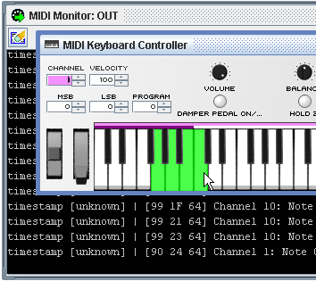

The MIDI Keyboard Controller acts as a virtual keyboard for sending MIDI Note On/Off and Control Change Messages. Keys can be depressed by pressing the mouse's left-click button and moving the mouse cursor over the desired key(s). Keys will be released when the mouse cursor moves off of the key or the mouse button is released To hold a key down, use the mouse's right-click button.
The 'Velocity' spinbox value will determine the velocity of the Note On/Off messages. The 'Instrument' spinbox will send Program Change messages when adjusted.
In addition to the Note On/Off messages, Control Change messages can be sent via six configurable knobs. To move a knob, left-click on it and move the mouse forward/right to increase the value, or down/left to decrease the value. Left/right keyboard keys can also be used if the knob is the focused component, and a mouse scroll-wheel can be used to make adjustments when the mouse cursor is above the desired knob.
The 'Pitch' and 'Mod' wheel are preset to send Pitch Change and Modulation CC messages.
Right-clicking on a CC Knob will allow the Control Change message type to be selected. Right-clicking on the CC Knobs or expression wheels also allow the channel to be set. The channel for each controller can be set manually or configured to use the MIDI Keyboard Controller's global channel.

The MIDI Keyboard Controller's global channel can be set using the 'Channel' spinbox. Any controllers set to use the global channel will send messages and respond to incoming messages on this channel. Keys will also be set to send Note On/Off messages on the global channel, however different zones of the keyboard can be configured to send on different channels. To map a key to the current global channel, hold down SHIFT while left-clicking on the desired key(s) on the keyboard.

When a key is mapped to send on a certain channel, it will always send on this channel regardless of what the global channel is set to. Clearing a key, so it will send on the global channel, is done by holding down SHIFT and right clicking on the desired key(s).
